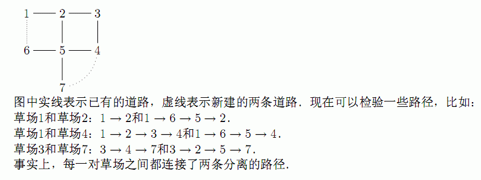

* Line 1: Two space-separated integers: F and R * Lines 2..R+1: Each line contains two space-separated integers which are the fields at the endpoints of some path.
第1行输入F和R，接下来R行，每行输入两个整数，表示两个草场，它们之间有一条道路．
In order to get from one of the F (1 <= F <= 5,000) grazing fields (which are numbered 1..F) to another field, Bessie and the rest of the herd are forced to cross near the Tree of Rotten Apples. The cows are now tired of often being forced to take a particular path and want to build some new paths so that they will always have a choice of at least two separate routes between any pair of fields. They currently have at least one route between each pair of fields and want to have at least two. Of course, they can only travel on Official Paths when they move from one field to another. Given a description of the current set of R (F-1 <= R <= 10,000) paths that each connect exactly two different fields, determine the minimum number of new paths (each of which connects exactly two fields) that must be built so that there are at least two separate routes between any pair of fields. Routes are considered separate if they use none of the same paths, even if they visit the same intermediate field along the way. There might already be more than one paths between the same pair of fields, and you may also build a new path that connects the same fields as some other path.
* Line 1: Two space-separated integers: F and R * Lines 2..R+1: Each line contains two space-separated integers which are the fields at the endpoints of some path.
* Line 1: A single integer that is the number of new paths that must be built.
7 7
1 2
2 3
3 4
2 5
4 5
5 6
5 7
2
